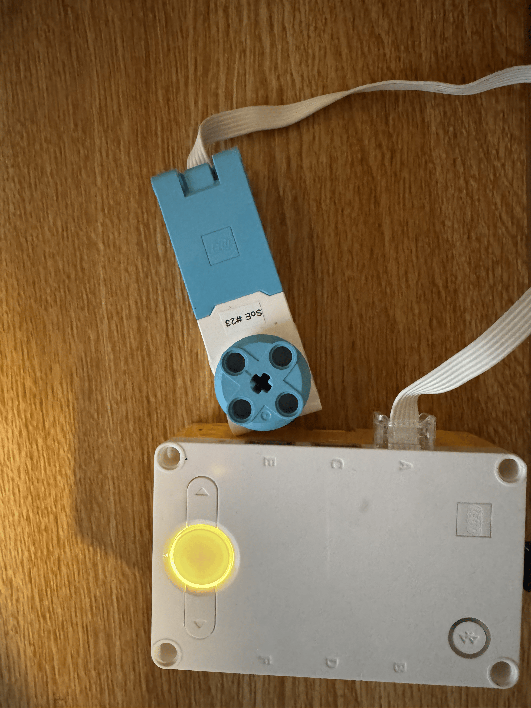

For this activity we had to start utilizing the inputs and outputs of the sensors and hardware of the SPIKE Prime kit in order to prepare for Project 8. I wanted to replicate the function of a gyroscopic electric screwdriver. So I utilized the IMU inside of the SPIKE Prime Hub to detect the roll of the hub and then used that to control the speed and direction of the motor's rotation. I also used the LED on the hub as a visual indicator of the direction of rotation.
# Setup: motor on port A; use the hub's motion sensor for roll.
from hub import port, motion_sensor, light
import motor
import runloop
import color
async def screwdriver_logic ():
roll
async def main():
# Keep checking the roll so the motor can respond to changes.
while True:
# Convert the roll reading from decidegrees to degrees.
roll = motion_sensor.tilt_angles()[2] / 10
# Stop the motor when the roll is between -10 and +10 degrees.
if (roll <= 25 and roll >= -25) or (roll >= 155 and roll >= -155):
motor.stop(port.A)
else:
# Run the motor when the roll is outside that range.
motor.run(port.A, int(roll * 10))
# update the LED green to show its going clockwise and red if its going counterclockwise
if roll < -25:
light.color(light.POWER, color.GREEN)
elif roll > 25:
light.color(light.POWER, color.RED)
else:
light.color(light.POWER, color.YELLOW)
# Pause briefly before checking again.
await runloop.sleep_ms(50)
runloop.run(main())